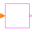
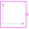
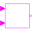
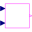
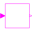

BooleanBlockBasic graphical layout of Boolean block |
Information
This information is part of the Modelica Standard Library maintained by the Modelica Association.
Block that has only the basic icon for an input/output, Boolean block (no declarations, no equations).
Extended by (8)
|
Modelica.Blocks.Routing Boolean signal replicator |
|
|  |
Modelica.Blocks.Interfaces Multiple Integer Input Multiple Boolean Output continuous control block with same number of inputs and outputs |
|
Modelica.Blocks.Interfaces Integer Input Boolean Output continuous control block |
|
|  |
Modelica.Blocks.Interfaces Base class for Boolean signal sources |
|  |
Modelica.Blocks.Interfaces 2 Single Input / Boolean Single Output block |
|  |
Modelica.Blocks.Interfaces 2 Multiple Input / Boolean Multiple Output block with same signal lengths |
|
Modelica.Blocks.Interfaces Multiple Input Multiple Output continuous control block with same number of inputs and outputs of Boolean type |
|
|  |
Modelica.Blocks.Interfaces Single Input Single Output control block with signals of type Boolean |